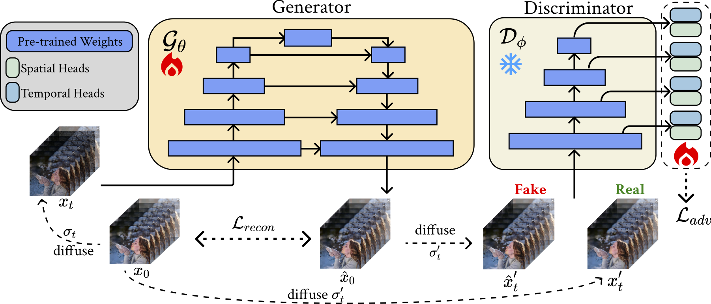
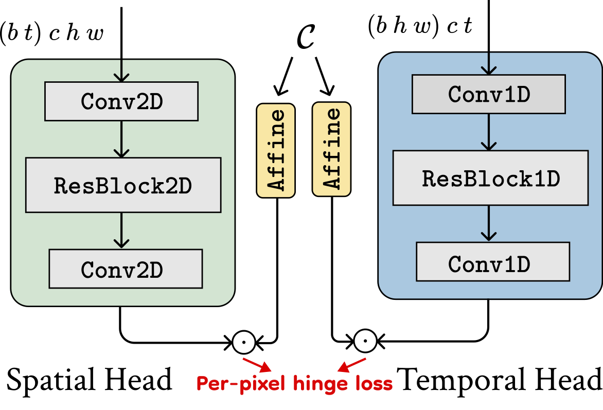

Diffusion-based video generation models have demonstrated remarkable success in obtaining high-fidelity videos through the iterative denoising process. However, these models require multiple denoising steps during sampling, resulting in high computational costs. In this work, we propose a novel approach to obtain single-step video generation models by leveraging adversarial training to fine-tune pre-trained video diffusion models. We show that, through the adversarial training, the multi-steps video diffusion model, i.e., Stable Video Diffusion (SVD), can be trained to perform single forward pass to synthesize high-quality videos, capturing both temporal and spatial dependencies in the video data. Extensive experiments demonstrate that our method achieves competitive generation quality of synthesized videos with significantly reduced computational overhead for the denoising process (i.e., around 23x speedup compared with SVD and 6x speedup compared with existing works, with even better generation quality), paving the way for real-time video synthesis and editing.
|
We initialize our generator and discriminator using the weights of a pre-trained image-to-video diffusion model. The discriminator utilizes the encoder part of the UNet as its backbone, which remains frozen during training. We add a spatial discriminator head and a temporal discriminator head after each downsampling block of the discriminator backbone and only update the parameters of these heads during training. Our discriminator heads take in intermediate features of the UNet encoder. Left: For spatial discriminator heads, the input features are reshaped to merge the temporal axis and the batch axis, such that each frame is considered as an independent sample. Right: For temporal discriminator heads, we merge spatial dimensions to batch axis. |
||
|  |  | |
| Overview of our method. | Discriminator heads. | |
| In this section, we provide video ablation results as mentioned in the paper. | |||
| Pmean = -2 Pstd = -1 |
Pmean = -1 Pstd = -1 |
Pmean = 0 Pstd = 1 | Pmean = 1 Pstd = 1 |
| In this section, we provide a screen recording demo showing the efficiency of our method. |